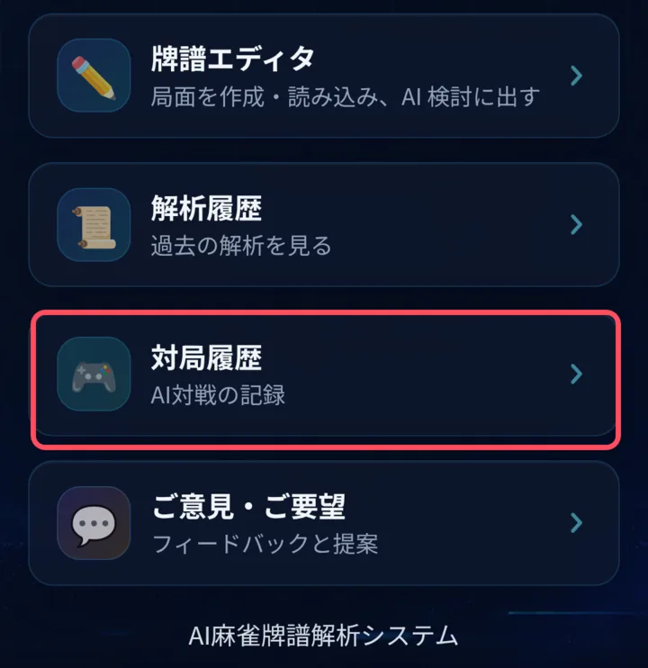
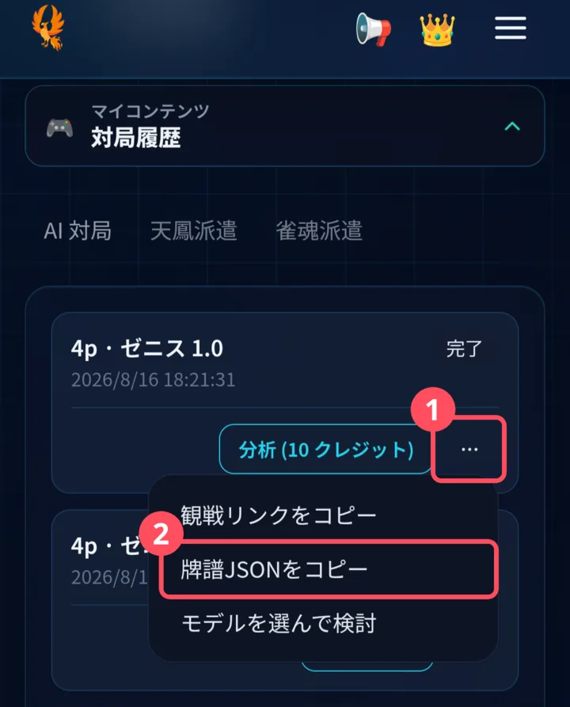

極雀 → 天鳳牌譜ビューア
極雀（旧 BigCoach）のAI対戦牌譜を、天鳳の牌譜ビューアで再生します。 不足している和了情報は、対局内容から判定できる範囲で補完します。 ※ 四人麻雀の牌譜専用です（三人麻雀には対応していません）。 ※ 極雀・天鳳とは無関係の非公式ツールです。
牌譜JSONを読み込む
極雀の対局履歴で「牌譜JSONをコピー」を選び、コピーした内容を貼り付けます。
対局履歴→…→牌譜JSONをコピー
取得手順を画像で見る


局一覧
視点を選び、見たい局を天鳳の牌譜ビューアで開きます。
補完と正確性について
このツールは、極雀の牌譜JSONをなるべくそのまま使い、天鳳の牌譜ビューアで再生するために不足している情報だけを補います。
元データ
そのまま使用する情報
配牌、ツモ・打牌、鳴き、立直の記録、ドラ表示牌、各局の開始点・点差などは、JSONに記録された値をそのまま使います。
復元
手牌から計算する情報
和了時の手牌を再構成し、役・符・翻、ドラ・赤ドラ・裏ドラ（表示牌が記録されている場合）、天鳳に表示する得点表記を計算します。手牌形から一意に決まる内容は、原則としてルール計算に基づく復元です。
履歴判定
対局の進行から判定する情報
一発、両立直、嶺上開花、槍槓、海底・河底、天和・地和、九種九牌・四風連打・四家立直・四槓散了などは、行動履歴から条件を満たす場合に補います。元JSONに必要な順序や宣言情報が残っていない場合は、確定できないことがあります。
制約
正確に復元できないことがある情報
元JSONに含まれない情報は完全には復元できません。特に包の責任者や三家和了の宣言有無などは、確証がないため推測で追加しません。役計算と元の点差が一致しない場合は、元データの点差を優先し、その旨を局一覧に表示します。
補完結果は極雀・天鳳の公式データではありません。牌譜の閲覧を補助する目的で使用してください。